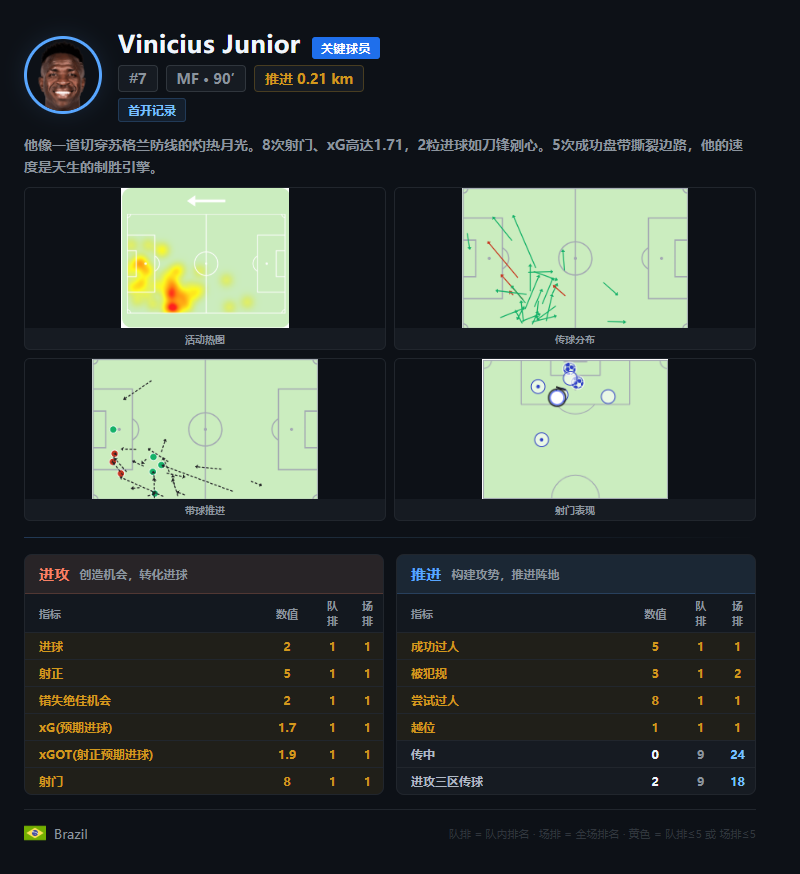
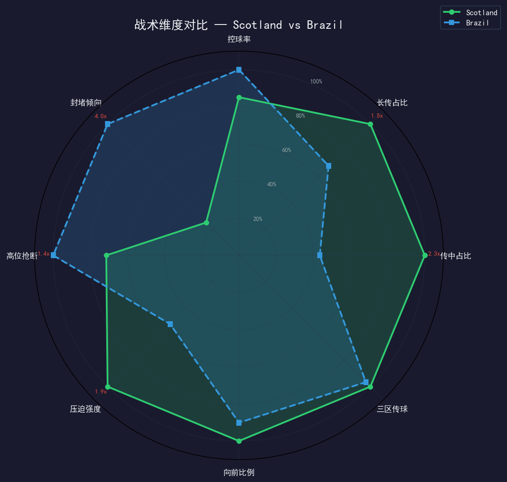
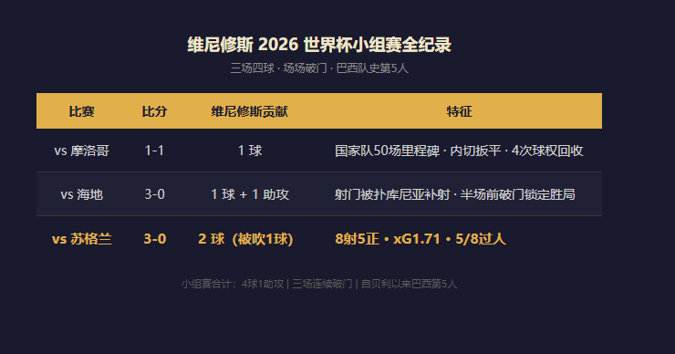
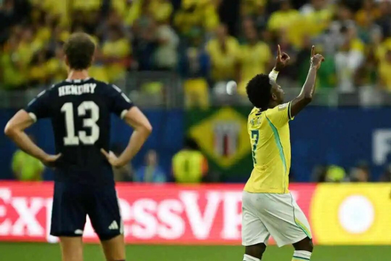
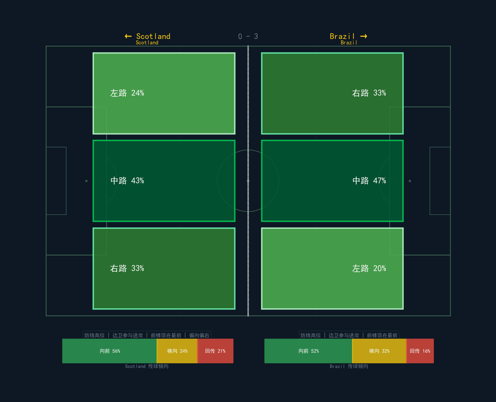
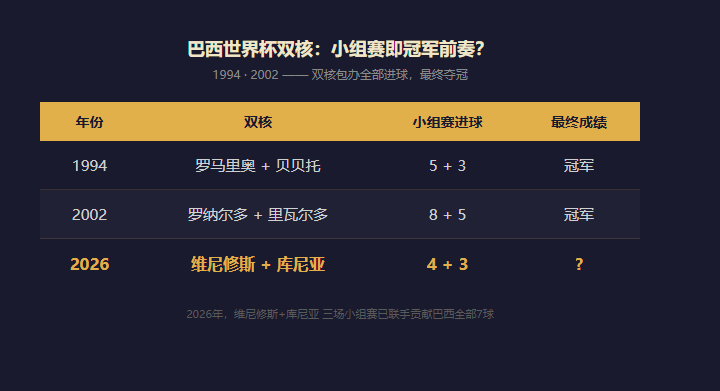
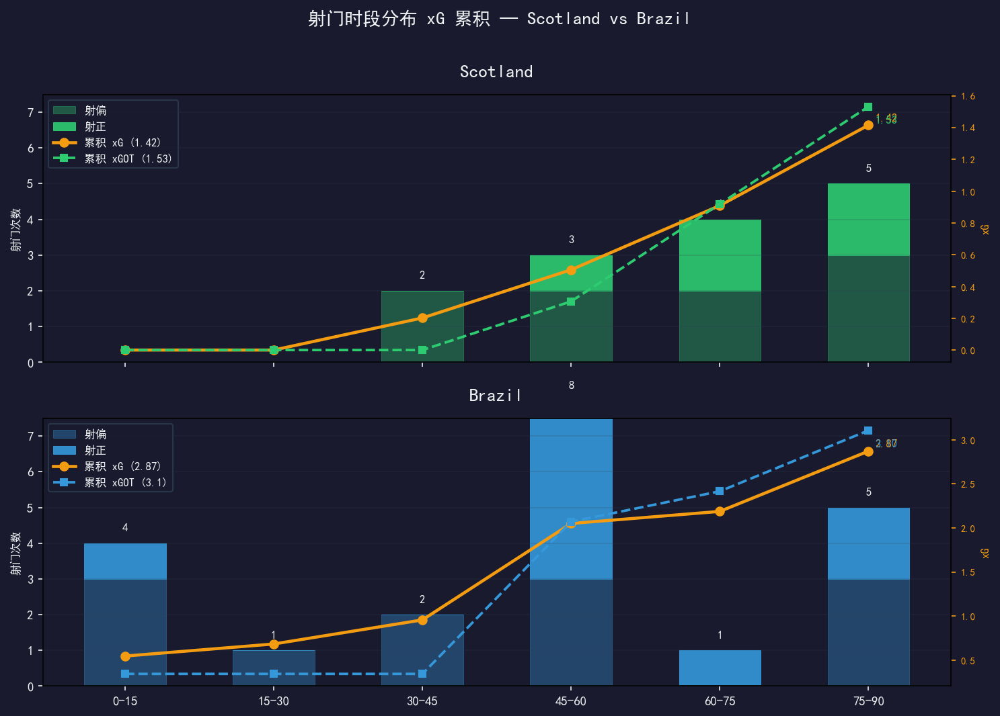
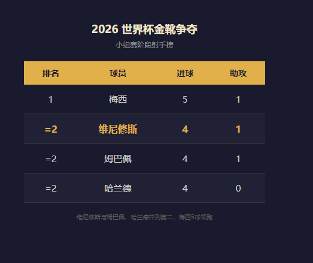
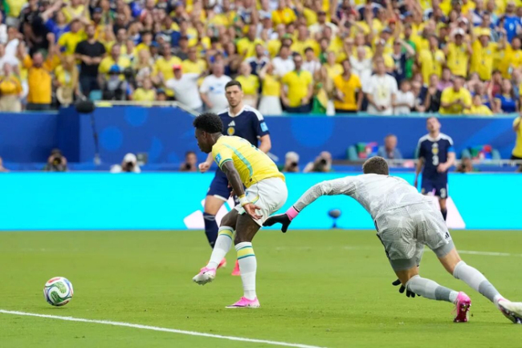

上半场补时第 3 分钟，迈阿密硬石体育场。吉马良斯右路起球，一道弧线越过苏格兰五后卫的头顶。维尼修斯从后点插上，力压防守球员一跃甩头，球砸进网窝。
他跑向角旗区，张开双臂，跳了一段即兴的舞。
比分牌 2-0。但记分牌上的数字只是这条轨迹的注脚：三场小组赛，四粒进球。只有四个人在巴西队的球衣下做到过——贝利、雅伊济尼奥、罗纳尔多、内马尔。现在他也在那行名单里了。
198 秒之前，他那记 VAR 吹掉的单刀仍在回响。但这支巴西已经不再需要等他一人拯救——他们只需要让他继续跑。

把维尼修斯的三场小组赛摊开，你会发现一个比"4 球 1 助攻"更有趣的叙事：他没有从慢到快——他一起步就是满速。
首场，摩洛哥。 摩洛哥先入一球，巴西靠维尼修斯内切劲射扳平。达尼洛赛后劈头盖脸地批评全队"全方位崩盘"，名宿梅洛尖锐地指出只有维尼修斯一个人"在线"。他在国家队 50 场里程碑上打进内切右脚低射扳平——这是他在皇马执行过无数次的公式，在迈阿密同样有效。全场最令人难忘的不是进球本身，是他完成了 4 次球权回收，犯规数超过被犯规数。也就是说，球队最重的进攻武器，也是为数不多在回防的球员。
次场，海地。 维尼修斯传射全包。他的射门被扑出后由库尼亚补射入网，他半场前的破门提前杀死比赛。三粒进球全部与他直接相关。
末场，苏格兰。 梅开二度。但叫这副数据"梅开二度"其实低估了它。8 次射门、5 次射正、xG 1.71。8 次尝试过人，5 次成功。我们的 V6 多维贡献模型用数据无法传递的东西给了一个更准确的命名——全场全部球员中的四项维度评估里，只有他的 C1 进攻创造被标记为：100% 分位。头号火力点。字面上的意思。

三场 4 球。中间夹着一个被 VAR 取消的单刀。如果那球算，他仅用小组赛就能实现职业生涯世界杯的第二次帽子戏法。
在皇马，他这个赛季拿出的是 22 球 10 助攻的成绩单，但球队零冠。在巴西，世界杯前被视为"只有 2 球入账的预选赛拖油瓶"——11 场才进 2 个。但用安切洛蒂的标准，维尼修斯回到了属于他的空间里，然后在三周之内重新定义了整支国家队的进攻体系。

要在本届世界杯的射手榜话题里找到一条能把"安切洛蒂"这三个字和"金靴"并排放在一起的解释，大概是这样——安切洛蒂是这个星球上唯一一个在俱乐部和国家队共用同一个武器系统的人。
他在皇马是怎么用维尼修斯的？左边线放给你，不用大范围回防，开火权在你手里，节奏由你决定。哈维·阿隆索在皇马做不到这一点（维尼修斯曾因被提前换下而情绪失控，安切洛蒂从巴西打越洋电话才安抚下来），但安切洛蒂接任巴西后，径直把这套模型搬了过来——甚至连中锋搭档也重新组装。
库尼亚首战替补。次轮首发，梅开二度。末轮再进一球。维尼修斯 4 + 库尼亚 3 = 巴西全部 7 球由两人包办。上一次出现这个模式是 2002 年的罗纳尔多 + 里瓦尔多（13 球），冠军。再往前，1994 年罗马里奥 + 贝贝托（8 球），冠军。
但这不只是一个战术说明书能理解的故事。赛前一个月，维尼修斯和 5500 万粉丝的巴西网红女友分手。同一赛季皇马在西甲、欧冠、国王杯全部空手而回。首战被摩洛哥逼平后，斯科拉里在场边听到维尼修斯搂住安切洛蒂说了一句："这届杯赛，我要进六个球。"三场之后，进度条在 4/6。
对苏格兰赛后，他说："我甚至还头球破门了。这正是我答应教练的，因为安帅说我不可能头球破门，答应给我一份礼物。"
他不是在炫耀。他是在兑现一场赌局。

把维尼修斯和巴西历史上的双核模板放在一起看，不是因为他追平了某一项纪录。而是因为他正在复刻一种模式。

三场七球是一种什么节奏？巴西队史只有那两次夺冠的冬天交出过这种密度。而且有一个细节比进球数更接近战术真相：维尼修斯三场全部进球、库尼亚连续两场连场破门——这不是交替爆发，这是两个人同时在跑。
这和内马尔的时代不同。2022 年的巴西的问题不是"没前锋"，而是"所有人都在等内马尔做第一动作"。现在不一样了。对苏格兰第 7 分钟，拉扬抢断麦肯纳的瞬间，维尼修斯已经启动了——他没有等。第 45 分钟，帕奎塔传中的时候他已经在后点站稳了——他也没有等。
更值得玩味的是内马尔的复出。76 分钟，他换下库尼亚，时隔 981 天重返国家队。全场起立。他摘了护腿板时手指轻轻扣了一下地面——一个没有人解释过的老动作。
但此后 14 分钟里，巴西依然在找维尼修斯。
这就是代际转换。不是"接班"，是有人在穿起原来的号码，但写的是自己的签名。


但维尼修斯的数据箱里装着别处没有的东西：效率密度。
对苏格兰一仗，平均每脚射门 xG 是 0.214——8 次射门，累计 1.71。转化率：两粒进球从五脚射正中兑现。作为对比，库尼亚 4 次射门 1 球，xG 0.69。苏格兰全队 14 次射门的 xG 是 1.42，零进球。三者之间的差异不来自运气，来自射门前的等待时间。
维尼修斯不刷基数。他的跑动轨迹显示他最高频次的切入位置是禁区左角内切弧——他不在禁区外草率起角。这意味着到了淘汰赛这种每场只会给他 3-4 次机会的节奏里，他不需要调整习惯。
名宿邓加的话可以放在这里："维尼修斯是技术层面的领袖，能创造机会并推进进攻。"名宿费利佩·梅洛则更直白："这届世界杯属于维尼修斯。"
现在他对着 6 球的军令状只差两球。内马尔在更衣室里坐着，安切洛蒂在教练席上看着，而巴西在淘汰赛通道的最前端——用一种比三场小组赛任何一瞬都更冷静的姿态。

关于维尼修斯这届世界杯的开局，最好的总结不在数据表里。在一份被重复引用的轶闻中。
首场赛后，他从看台上走下来的罗纳尔多手中接过全场最佳球员的奖杯。记者问他感觉如何，他说："虽然进球了，但我的技术发挥还没到百分之百。我还有很大的进步空间。"
三周之后，4 球 1 助攻。
所谓"进步空间"，在他的引用里，是一个现在进行时。
*数据：FotMob 实时统计，duoduocode-analyst 球员多维贡献模型 V6*
*新闻来源：北京青年报、红星新闻、新民晚报、搜狐、凤凰网、央视网、极目新闻*
*视觉：豆包视觉模型逐人读图*
*分析时间：2026 年 6 月 25 日*